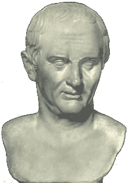
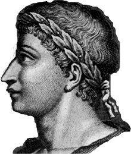
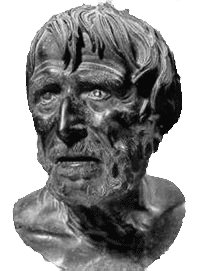
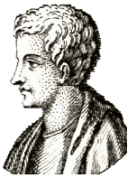
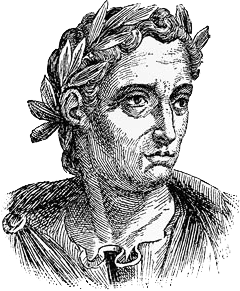
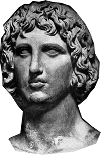

Введение в романо-германскую филологию
| лекция 1 | лекция 7 | лекция 8 |
| лекция 2 |  |
лекция 9 |
| лекция 3 | лекция 10 | |
| лекция 4 | лекция 11 | |
| лекция 5 | лекция 12 | |
| лекция 6 | лекция 13 |
ЛЕКЦИЯ 9:
Зачем понадобилась Византия
Да, становым хребтом, точкой опоры и исходной точкой античной литературы и литературоведения были произведения Гомера, Гесиода (7 в. ДРХ : «Труды и дни» (в какой сезон чем заниматься и как; + мифы)) и прочих греческих авторов.
Да, наивысшей похвалой римскому автору звучал комплимент, что он пишет как автор греческий.
Однако, не надо думать будто римляне—имевшие склонность к писательству—занимались лишь списыванием у греков, либо подделками под их стиль. Вовсе нет.
Имелись и у них – в достаточном количестве и достохвального качества – свои оригинальные творцы трудившиеся на ниве образования и воспитания сограждан:
| Публицисты | Поэты |
|---|---|
|
Цицерон (106-43)  В свободное от политики время писал про философию и ту же политику. Сохранились 57 его речей и столько же пропали. Свой красивый стиль заимствовал у грека Демосфена. |
Овидий (43-18)  писал настолько славно и изящно, что поколения последущих поэтов всевозможных стран и народов западной цивилизации старались подражать ему и на него равнялись. Основная тематика его стихов – любовь, любовь и снова про любовь; за это и был сослан в глушь степей молдавских, дабы не сманивал молодежь на излишества всякие. Не помогло – он и там писал стихи как правильно ухаживать за кожей лица. |
|
Сенека (4-65)  Не только объяснял что такое хорошо, но даже составлял сборники упражнений, как его делать—то есть хорошо поступать. Да ещё тома по истории и пьесы из велеречивых диа- и монологов. |
Гораций (65-8)  слишком длинных творений не выписывал – знал меру и в стихах, и в жизни. Произведения его переведены на все (имеющие литературу) языки мира. |
|
Плиний (61-113)  Написал около сорока томов про всё, то есть – энциклопедию. |
Вергилий (70-19)  написал продолжение к сериалу о троянской/илионской войне – поэму «Энеида» – о похождениях Энея, который с группой товарищей бежал из павшего и разграбленного греками родного города, чтобы в дальнейшем вместе со своей группой стать отцами нового племени – квиритов, предков римлян. |
Но публицистика и поэтическое творчество римских папирусомарателей, как и граматические их изыски, оставались старой песней на новый лад.
Римские понятия о добродетели, шкала их моральных ценностей оставались теми же, что и выводимые из поэм Гомера и Гесиода. Просто теперь это все излагалось на ином диалекте.
Новые идеи и понятия добра и зла несло христианство.
На первых порах—в первые века своего существования—христианство не пёрло рогом на культуру язычников, возможно, по той простой причине, что политическая власть пребывала в руках нехристей.
Отцы Церкви из второго в. ПРХ – Юстин, Клемент александрийский и Оригон – в своих прениях с языческими философами проявляли изумительную начитанность из языческой литературы. Ну, а спорить им порой приходилось ради элементарной самообороны.
Так, выдающийся нео-платоник Порфирий (234-305) помимо коментариев к Платону, Аристотелю, Теофрасту и Плотину издал, как заведено было меж философскими школами, критику на тех, «кто не с нами» – не из нашей школы – и гребёт против нашего течения; в данном случае досталось христианам.
И оборонялись Отцы Церкви по всем правилам языческой диалектики.
Даже после триумфа христианства в 313 г., когда император Константин Великий решил, что – долой предрассудки, и что христиане – тоже люди, а если какой-то из христиан пристроится на тёплое местечко, то не так уж и обязательно швырять его на арену—публике для развлечения, тиграм на прокорм—иными словами: когда христианство вышло из подполья и принялось бороться за власть легальными методами, даже и тогда учёные-христиане и учёные-язычники посещали лекции друг друга.
Так например, прославленый ритор из язычников – Либаний Антиохийский – обучал Св. Иоана Христосома и Св. Василия, которые свою последущую пропаганду строили по всем канонам ораторского искусства, через что и выбились в святые.
А Феодор (350-429), епископ Морсуесты, глава антиохийской школы, при толковании неясных мест из Библии применял чисто языческие методы критицизма (составления суждений).
Члены христианской школы Газы в 5-6 в.в. писали диалоги a lá Платон, но с христианским содержанием.
И в те же 5-6 в.в. нео-платоники составили коментарии к Платону, Аристотелю и другим философам, приводя обширные цитаты из них и тем самым сохранив бесценные фрагменты/осколки текстов, прочие части которых, увы, утрачены.
И это оказалось последним филологическим подвигом ученых-язычников, так как в 529 г., указом Юстиана Первого языческие философские школы были закрыты – началась эра христианской нетерпимости к иноверцам.
Помянутый указодатель был, конечно же, император, но уже не Римской Империи, которая фактически с 395, а формально с начала следущего—пятого—столетия разделилась на две империи: Западную и Восточную.
Восточная получила название Византии и пережила Западную на 1 тысячу лет.
Поначалу, помимо Греции и Балкан, Византия довольно успешно владела обширными территориями на Ближнем и Среднем Востоке, а также в Северной Африке.
Итак, на обширных территориях необъятной Византийской империи указом императора запрещены школы, где изучали и коментировали Гомера, философов и наставников античности.
Так куда, спрашивается, податься тем людям, которым мало жить для удовлетворения лишь потребностей желудка и прочих органов; которым и жизнь не в жизнь, если не предоставляется возможность упражнять и применять свой интеллект/разум?
На выручку приходит способность к приспосабливанию.
Уж коли культуриста можно перевести со штанги на гантели, то почему бы и разумникам не поменять снаряд для тренировки?
И вот краеугольные камни интеллектуальной жизни античного мира—«Одиссея» и «Илиада»—благополучно были сменены «Ветхим Заветом» и «Евангелием», где также имеется масса морализаторских наставлений вперемешку с разного рода приключениями и поэтичевскими описаниями.
Однако, прошу отметить и запомнить на будущее, что заменен был предмет изучения/приложения умственного труда, а инструменты/орудия остались прежними – откованными в греко-римских мастерских.
В 7 в. Арабское завоевание отрезало Сирию, Палестину, Египет от греческой цивилизации.
Откуда взялись эти арабы? А ниоткуда, они всегда тут и были.
Семитский народ – потомки Исава, продавшего за чечевичную похлебку свое первородство брату Иакову, ставшему—в дальнейшем—родоначальником 12 колен израилевых..
Мать их обоих—по свидетельству библии—именовалась Сарой, и поэтому арабов прозвали еще и сарацинами.
Жили они себе на Аравийском полуострове, резались друг с другом, да грабили подвернувшиеся караваны, поклонялись разным богам и духам, покуда больной эпилепсией купец и поэт из города Медина, по имени Мухамед, не начал доказывать речами и стихами, что Бог только один, зато – очень большой.
Как вам уже известно из данного курса РГФ, всё на свете может становиться целью, способом или инструментом.
Вера может служить инструментом не только передвижки гор («вера горами движет»), но и для объединения людей.
Разрозненные арабские племена, постепенно объединенные единой исламской верой, подчинили не только Малую Азию, но и всю Северную Африку, часть Европы (Пиринейский п-ов), Ближний и Средний Востоки, Закавказье и далеко углубились в Центральную Азию.
Постоянное наличие арабской угрозы сказалось на политической и культурной жизни Византии, где в 7-9 в.в. в императорах ходили боевые и бравые, но узколобые ребята – бытие определяет сознание.
Впрочем, даже тёмные века визинтийской истории имели свои светлые пятна.
Во второй половине 8 в. составлена была грамматика Георгия, а в начале 9 в. писал свои научные работы Теогност, пусть хоть и скучно, зато обильно.
В 800 г. Византийцы переняли у арабов способ изготовления бумаги, что получалась намного дешевле папируса.
Арабы, в свою очередь, обучились этой технологии от китайцев, которых захватили в плен в битве при Самарканде.
Сами византийцы не слишком-то использовали это знание, зато заполучившие его от них итальяцы к 13 в. развели у себя процветающую бумажную промышленность и торговали бумагой по всей Европе.
На тот же 9-й в. приходится Первое Византийское Возрождение, проводившееся такими учеными как Лев Философ, у которого, кстати, обучася Св. Кирилл, изобретатель славянскорй письменности; но главный деятель этой эпохи – патриарх Фотий (820-891), составивший греческий лексикон и книгу Biblioteka – собрание коментариев и аннотаций к древним книгам, в основном по истории.
В 12 в. Иван Цецес пишет 60 книг по греческой литературе, а Евстафий Фессалоникийский – обширные коментарии к «Илиаде» и «Одиссее».
Как видим, мало им, христианским ученым, было библии и евангелия – тянуло их возрождать античную литературу.
В 1204 нагрянул 4-й крестовый поход под предводительством венецианцев, в результате которого исчезли и погибли многие работы и труды.
Крестоносцы захватили столицу Визинтии—Константинополь—и так её дико разграбили, что нанесли неизмеримо больший урон культуре, чем даже турки, овладевшие городом 250 лет спустя.
Второе Византийское Возрождение началось после ухода крестоносцев и благодаря спонсорству Федора II, который много содействовал культуре.
Золотыми буквами вписаны на скрижали истории Второго Византийского Возрождения бессмертные имена: Максима Плануда (1260-1310) – составителя новой антологии эпиграм, переводчика на греческий Овидия, Августина, Боэция; и Федора Метохида (1260-1332) – ведущего интелектуала и общественного деятеля, написавшего сборник об античных ораторах и историках.
Последущие столетия шел процесс развала и дезинтеграции: империя таяла как снег на солнце—безудержно и необратимо; и когда в 1453 г. Турки заняли Константинополь, вся Византия, в сущности, и состояло-то всего лишь из столицы да прилегающих окрестностей.
Ровно на тысячу лет Восточная Римская Империя—госъязыком в которой был греческий—пережила Западную Римскую Империю (где госъязыком был диалект греческого — латынь), которая еще в 476 г. превратилась в разрозненную Западную Европу.
Греческий язык на Западе вымер с умопомрачительной быстротой начиная с с 3-4 в.в.
Таких переводчиков как Джером (347-409) или Руфин (345-410) было днём со огнем поискать, да и переводились в основном лишь христианские философы-теологи, то есть – греческие тексты посвященные толкованиям Священого Писания и вопросам веры.
И только в 12-м в., когда в Западной Европе научились выращивать фасоль и пошло интеллектуальное оживление, Генрик Аристин (архидиакон Катании) перевел с греческого на латынь 2 из диалогов Платона.
В 12-м же веке, 2 итальянских ученых – Якоб из Венеции и Бургундио из Пизы съездили в Константинополь и закупили большую партию античной литературы, которую сами, увы, не умели читать.
Но своим примером они завели неплохую моду и в начале 15-го столетия—в десятилетия накануне турецкого завоевания—из Константинополя вывезли в Италию массу греческих книг.
И когда сегодня задумываешься: "а на кой ляд надо было огород городить и чего ради Восточная Римская Империя брыкалась лишнюю тысячу лет?" то—на мой текущий взгляд—самый логосный ответ таков: чтоб сохранить упомянутую литературу и передать её на Запад, когда там уже образумятся настолько, чтоб не пускать её на растопку печек и костров.
Возможно, у бизнесменов, юристов, военных или сантехников иное мнение о целях и задачах исторического прогресса и они предпочли бы как-нибудь иначе объяснить долгожитие Византии, но им это простительно – они ведь не филологи.
А раз не филологи, то и понятие у них о ней более, чем смутное, а без понятия и мнения-то быть не может.
Вот почему мнение, что Византии предназначалось послужить в качестве сейфа для хранения ценных бумаг является, на данный момент, господствующим в данном вопросе.